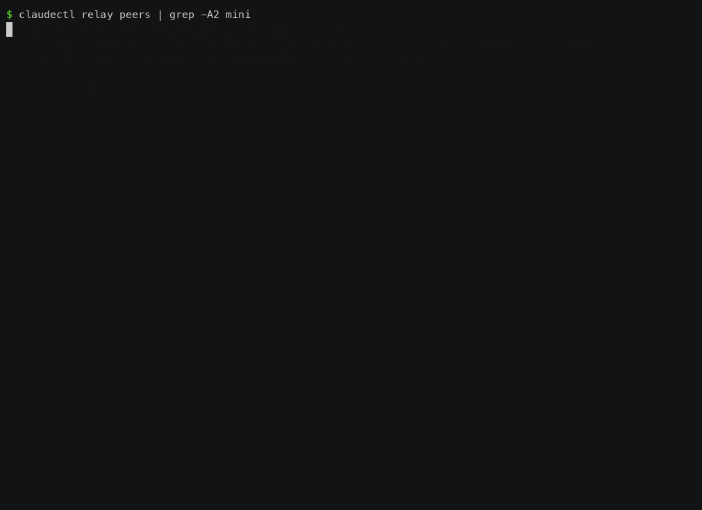

Fleet Supervisor
Hand claudectl a queue of tasks and it runs them on your machines unattended. Each task gets its own git worktree and branch. A task is DONE only when its verifiers pass. A task whose verifier fails goes back to work with the failure in its prompt. A task with dependencies starts after they finish, and it's told what they handed off. With two or more machines paired over the relay, each task goes where there's room.

Recorded on two real Macs with real claude, on 0.90.0. The laptop supervises. Both tasks went to the mini, which had more free memory. fix-it failed its verifier on the mini, went back to the same worktree with the failure in its prompt, and passed.
tasks.toml ──► supervisor work ──► place ──► run (here, or on a peer) ──► verify ──► DONE
▲ │
└──────────── retry with the failure output ◄──────┘
On one machine
1. Describe the work
# tasks.toml
[[task]]
name = "user-schema"
cwd = "." # relative to this file
prompt = "Add a users table migration with email and created_at."
git_ref = "main" # run in a new worktree from main, on its own branch
[[task.verify]]
run = "cargo test --all-targets" # the exit code is the verdict
[[task]]
name = "user-api"
cwd = "."
prompt = "Add CRUD endpoints for users on top of the new table."
git_ref = "main"
depends_on = ["user-schema"] # starts once user-schema is DONE
max_retries = 2
[[task.verify]]
run = "cargo test --all-targets"
[[task.verify]]
agent = "Review the diff for missing auth checks on the new endpoints."
model = "haiku" # a read-only reviewer: it can read the work, not change it
budget_usd = 0.25
2. Queue it and run it
claudectl supervisor validate tasks.toml # catches typos, dangling or cyclic depends_on
claudectl supervisor run tasks.toml # queues; doesn't run anything
claudectl supervisor work --until-idle # runs the queue, then exits when nothing is left
supervisor work is the whole loop: start a claude session per task, watch it, run its verifiers, retry or finish. It touches no session it didn't start. Leave it running without --until-idle, or run it under your service manager, for a queue that keeps filling.
3. Watch it
claudectl supervisor status # one line per task
claudectl supervisor status --graph # the depends_on tree, and why anything is blocked
claudectl supervisor logs <task_id> # every transition and verdict
What happens to a task
| It… | The supervisor… |
|---|---|
| ran in a worktree | made ~/.claudectl/worktrees/<task> on claudectl/<name>-<id> (or your branch =). Your checkout is never touched. A clean worktree is removed after DONE; the branch stays. |
| passed every verifier | marks it DONE. |
| failed a verifier | sends it back to work in the same worktree, its prompt now ending with the verifier's output, up to max_retries, then NEEDS_HUMAN. |
| had its session die | resumes it with a prompt that says to assess the worktree before doing anything. |
| depends on a task that was cancelled or needs a human | moves it to NEEDS_HUMAN with the reason, e.g. dependency_cancelled:user-schema, and so on down the chain. |
was running when supervisor work restarted |
adopts the running session instead of starting a second one. |
Verifiers come in three kinds:
- run is a shell command in the worktree, and its exit code is the verdict.
- brain asks your local model ([brain] in the config), which is shown the task's diff.
- agent runs a headless, read-only claude reviewer in the worktree that answers PASS or FAIL.
A verifier that can't reach a verdict counts as a FAIL.
Across machines
Pair two machines with the relay first: Connect Two Machines. Then run relay serve on both. Each machine's relay advertises how much room it has on every heartbeat:
$ claudectl relay peers
baradas-mac-mini-508f9c0e 100.109.212.89:9910 yes
└ claudectl 0.90.0 · claude 2.1.301, git 2.54.0, node 22.23.3 (macos/aarch64)
└ 9874 MB free · load 0.10/core · 49690 MB disk · 0 running (1s ago)
From then on, supervisor work places each task on the machine with the most free memory that can take it, here or on a peer. On a peer, the task runs in that peer's worktree and its run = verifiers run there too, and the verdicts come back to the supervisor. A retry goes back to the same peer and the same worktree.
Limits per machine: policy.toml
~/.claudectl/coord/policy.toml. Without it, this machine runs four tasks at a time, as before.
stale_after_secs = 90 # a peer heard from longer ago than this gets nothing
[local] # this machine
max_tasks = 4
min_free_mem_mb = 2048 # don't start a task below this much free memory
max_load_per_core = 1.5
min_free_disk_mb = 5120
mem_per_task_mb = 1024 # what a task is assumed to take until it's measured
drain = false # true: start nothing here (same as `supervisor drain`)
[peers] # defaults for every peer
max_tasks = 2
[peers.baradas-mac-mini-508f9c0e]
max_tasks = 6
A floor that's set and a measurement that's missing is not room: an unknown is never treated as plenty. A misspelt key is an error, and supervisor work won't start with a broken policy.
Each machine also advertises its own [local] max_tasks, and a peer refuses work past it. A refusal doesn't use up a retry; the task is simply placed again.
A machine that refused a task, or couldn't be sent it, isn't tried for that task again straight away:
- It backs off: 5 s after one refusal in a row, then 10, 20, 40, 80, 160, and at most 5 minutes.
- Another machine can take it meanwhile. If none can, the task waits and says why.
- After 10 attempts in a row that never started (about 20 minutes), the task goes to NEEDS_HUMAN with the peer's own reason, for example never_started: 10 attempts in a row didn't start; the last was peer_refused on baradas-mac-mini-508f9c0e: Could not start the task: spawn claude …: No such file or directory.
- An attempt that actually ran starts the count again.
Choosing where a task runs
requires = ["docker", "node>=22", "claude:auth"] # tags, or tools the relay probes
peer = "baradas-mac-mini-508f9c0e" # only there
- Tags are yours to define:
[relay] tags = ["docker", "gpu"]in a machine's config. - Tools are probed by the relay:
claude,git,cargo,python3,node, with>=for a version and:authfor a credential. - A name that's neither a tag nor a probed tool is never met.
These tasks stay on the machine that submitted them:
- A task with a role, because the mailbox is local.
- A task with a brain = or agent = verifier, because those verifiers run locally.
When a task waits, it says why
supervisor work prints a waiting task's reason when it changes, not every pass:
waiting: task_…_3: this machine is running 4 of 4 tasks; baradas-mac-mini-508f9c0e lacks `docker`
waiting: task_…_5: this machine is draining; baradas-mac-mini-508f9c0e has not been heard from recently
waiting: task_…_7: this machine is draining; baradas-mac-mini-508f9c0e didn't start the last 3 attempt(s) (peer_refused); backing off 20s
Rules for running on a peer
- The repo lives at the same path on both machines. A task's
cwdis used on the peer as-is. If it doesn't exist there, that attempt fails with "working directory does not exist on this host". - The work comes back as a branch on the peer. The handoff names it (
claudectl/<name>-<id>). Fetch it the way you'd fetch any branch from that machine, for example over ssh. - A peer never runs two attempts of one task at once. If the supervising machine stops hearing about an attempt (its relay was down, say), it asks the peer to stop that attempt before sending the task again. The peer also refuses a second attempt while the first is still running.
- Both machines need
relay serverunning, on builds that agree thesupervised-taskfeature (eachrelay servelogs the features a link agreed). The supervisor won't send a supervised task to an older peer, which would skip the verifiers.
Worked example: two Macs
The run used to verify this release had a laptop supervising, drained so it ran nothing itself, and a Mac mini peer, with the repo at /tmp/claudectl-cluster/repo on both:
- An unpinned task. Placement chose the mini on its own.
claudecommittedMINI.txtonclaudectl/cluster-auto-…in the mini's worktree, the verifier passed on the mini, and the task was DONE. $0.32. - A task pinned to the mini and written to fail once.
- Attempt 1 wrote
draft. The verifier failed on the mini, and its output (FIX.txt must contain exactly the word final) came back to the laptop. - Attempt 2 went back to the same peer and worktree with that output in its prompt, wrote
final, passed, and was DONE. $0.33 + $0.35. - Afterwards: the mini's checkout was untouched, and both branches held their commits.
Known gaps
- The handoff carries the branch and a summary, not a PR link.
brain =andagent =verifiers run only on the supervising machine, so tasks that use them aren't sent to peers.
See also: Reference: supervisor commands, Relay & Hive Mind.